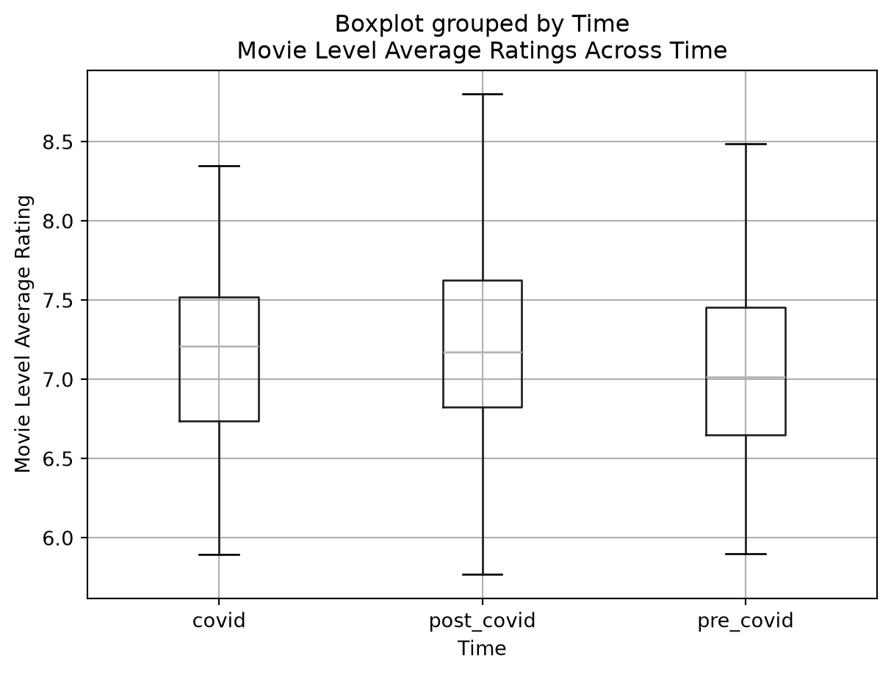
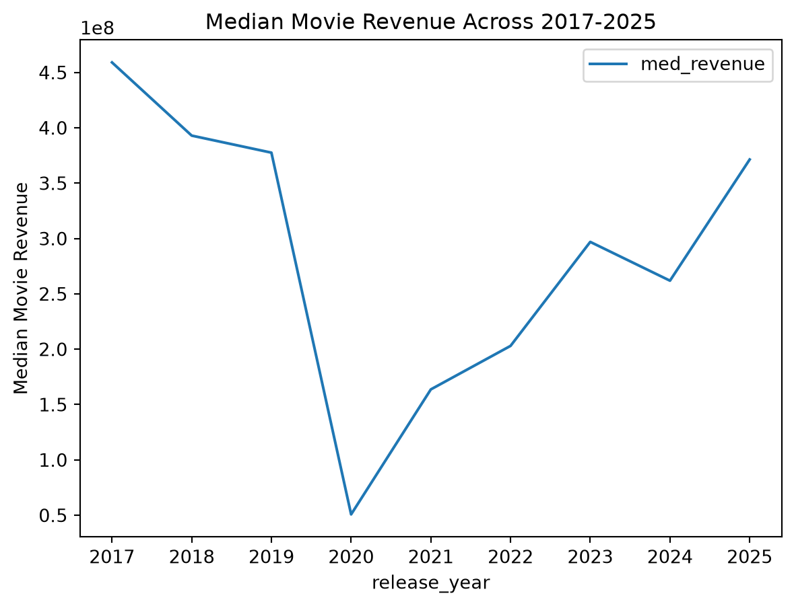
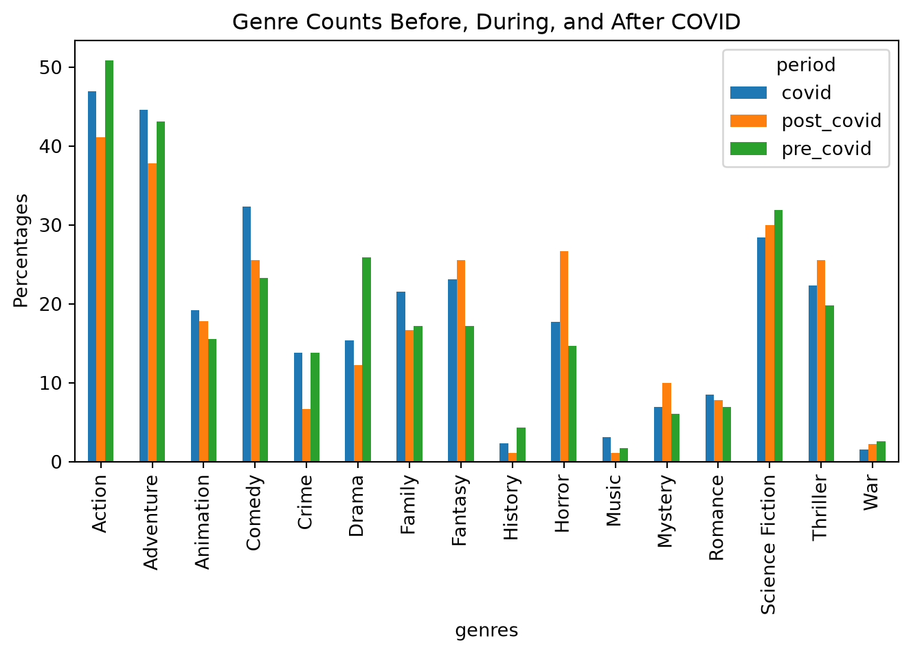

import pandas as pd
import matplotlib.pyplot as plt
data = pd.read_json("data/movies_clean.json")cleaned_data = data.copy()
print(len(cleaned_data))336# defining pre, during, and post covid years
pre_covid_mask = cleaned_data["release_year"].between(2017, 2019)
covid_mask = cleaned_data["release_year"].between(2020, 2023)
post_covid_mask = cleaned_data["release_year"].between(2024, 2026)
pre_covid_movies = cleaned_data[pre_covid_mask]
covid_movies = cleaned_data[covid_mask]
post_covid_movies = cleaned_data[post_covid_mask]# getting box plot of avg movie ratings
combined = pd.concat([
pre_covid_movies.assign(Time='pre_covid'),
covid_movies.assign(Time='covid'),
post_covid_movies.assign(Time='post_covid')
])
combined.boxplot(by='Time', column=["vote_avg"])
plt.title("Movie Level Average Ratings Across Time")
plt.ylabel("Movie Level Average Rating")
plt.savefig("movie_rating_avg_across_time")
# getting medians of movie rating avg
print(pre_covid_movies["vote_avg"].median(), covid_movies["vote_avg"].median(), post_covid_movies["vote_avg"].median())7.016500000000001 7.2105 7.1725# getting movie counts in each time period
print(len(pre_covid_movies), len(covid_movies), len(post_covid_movies))
# getting line plot of revenue
plt.clf()
revenue_data = cleaned_data.loc[cleaned_data["release_year"].between(2017, 2025)].groupby("release_year").agg(med_revenue=("revenue", "median"))
revenue_data.plot.line()
plt.ylabel("Median Movie Revenue")
plt.title("Median Movie Revenue Across 2017-2025")
plt.savefig("revenue_line_plot")116 130 90<Figure size 672x480 with 0 Axes>
plt.clf()
# splitting movies with multiple genres into a row for each genre then counting total movies with each genre
genre_data = cleaned_data.explode("genres").dropna(subset=["genres"])
genre_counts = genre_data.groupby(["release_year", "genres"]).size().rename("movie_count").reset_index()
# getting new masks to isolate movies in each time period
genre_pre_covid_mask = genre_counts["release_year"].between(2017, 2019)
genre_covid_mask = genre_counts["release_year"].between(2020, 2023)
genre_post_covid_mask = genre_counts["release_year"].between(2024, 2026)
# getting number of movies in each tme period
pre_size = cleaned_data.loc[pre_covid_mask, "id"].nunique()
covid_size = cleaned_data.loc[covid_mask, "id"].nunique()
post_size = cleaned_data.loc[post_covid_mask, "id"].nunique()
# making a period column
genre_counts["period"] = pd.NA
genre_counts.loc[genre_pre_covid_mask, "period"] = "pre_covid"
genre_counts.loc[genre_covid_mask, "period"] = "covid"
genre_counts.loc[genre_post_covid_mask, "period"] = "post_covid"
# using dictionary to make percentage calculation easier
period_sizes = {"pre_covid": pre_size,
"covid": covid_size,
"post_covid": post_size
}
# getting total movies for each time period genre combo
period_genres = (genre_counts.groupby(["period", "genres"], as_index=False)["movie_count"].sum())
# dividing by size of mapped time period
period_genres["percent_of_movies"] = (period_genres["movie_count"] / period_genres["period"].map(period_sizes) * 100)
# plotting
genre_plot_data = period_genres.pivot(index="genres", columns="period", values="percent_of_movies").fillna(0)
genre_plot_data.plot.bar()
plt.title("Genre Counts Before, During, and After COVID")
plt.ylabel("Percentages")
plt.tight_layout()
plt.savefig("genres_by_period")
print(period_genres) period genres movie_count percent_of_movies
0 covid Action 61 46.923077
1 covid Adventure 58 44.615385
2 covid Animation 25 19.230769
3 covid Comedy 42 32.307692
4 covid Crime 18 13.846154
5 covid Drama 20 15.384615
6 covid Family 28 21.538462
7 covid Fantasy 30 23.076923
8 covid History 3 2.307692
9 covid Horror 23 17.692308
10 covid Music 4 3.076923
11 covid Mystery 9 6.923077
12 covid Romance 11 8.461538
13 covid Science Fiction 37 28.461538
14 covid Thriller 29 22.307692
15 covid War 2 1.538462
16 post_covid Action 37 41.111111
17 post_covid Adventure 34 37.777778
18 post_covid Animation 16 17.777778
19 post_covid Comedy 23 25.555556
20 post_covid Crime 6 6.666667
21 post_covid Drama 11 12.222222
22 post_covid Family 15 16.666667
23 post_covid Fantasy 23 25.555556
24 post_covid History 1 1.111111
25 post_covid Horror 24 26.666667
26 post_covid Music 1 1.111111
27 post_covid Mystery 9 10.000000
28 post_covid Romance 7 7.777778
29 post_covid Science Fiction 27 30.000000
30 post_covid Thriller 23 25.555556
31 post_covid War 2 2.222222
32 pre_covid Action 59 50.862069
33 pre_covid Adventure 50 43.103448
34 pre_covid Animation 18 15.517241
35 pre_covid Comedy 27 23.275862
36 pre_covid Crime 16 13.793103
37 pre_covid Drama 30 25.862069
38 pre_covid Family 20 17.241379
39 pre_covid Fantasy 20 17.241379
40 pre_covid History 5 4.310345
41 pre_covid Horror 17 14.655172
42 pre_covid Music 2 1.724138
43 pre_covid Mystery 7 6.034483
44 pre_covid Romance 8 6.896552
45 pre_covid Science Fiction 37 31.896552
46 pre_covid Thriller 23 19.827586
47 pre_covid War 3 2.586207<Figure size 672x480 with 0 Axes>